Clase 11/2 "Armamos el carrito digital, paso a paso"
Cómo trabajamos
- Conectar solo lo del paso, con el interruptor apagado
- Medir lo que dice la diapositiva
- Si no da lo mismo, no seguimos: levantan la mano
- Motores a 6 V (4 pilas AA). Arduino con su pila de 9 V. Nunca mezclarlas
Lo que vamos a armar: 16 pasos Guía en PDF
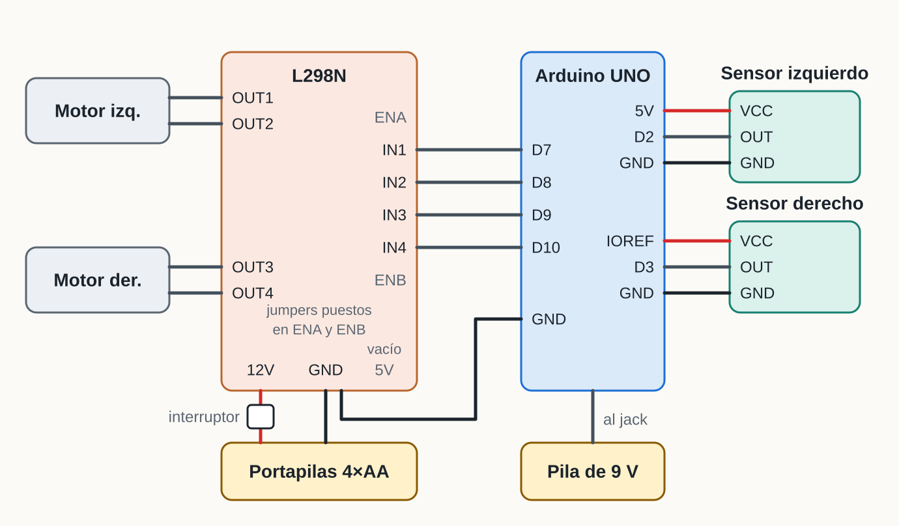
Primero todo el cableado, con una prueba en cada paso. La programación va al final.
Paso 1 · Alimentación de los motores
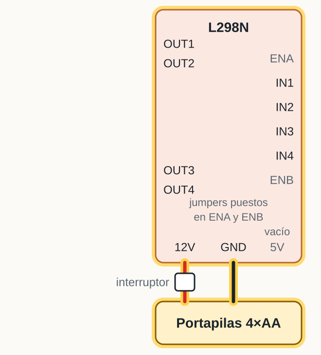
Conectar
- Rojo (+) del portapilas al interruptor y de ahí al borne 12V del L298N
- Negro (−) al borne GND (el del medio)
- El borne 5V se deja vacío
Debe dar
Entre 12V y GND: 5,6 a 6,4 V.
Paso 2 · El motor izquierdo
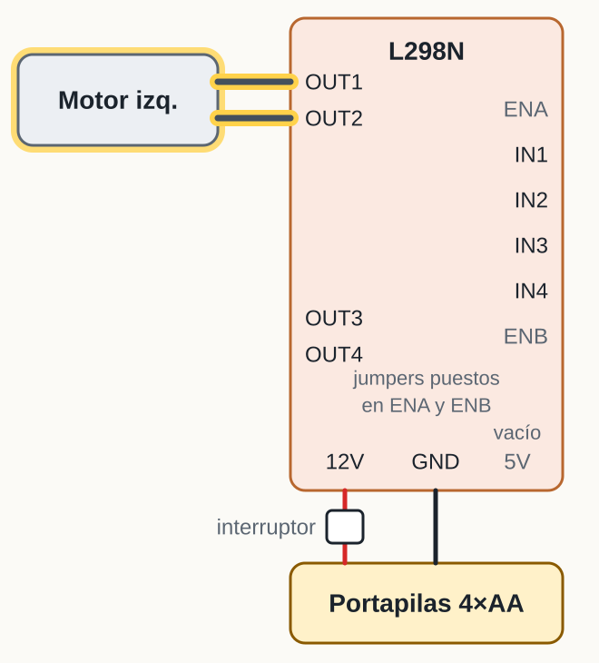
Conectar
- Un cable del motor al borne OUT1
- El otro cable al borne OUT2
Debe dar
Al tirar suave de cada cable, no se sale. Todavía no gira.
Paso 3 · El motor derecho
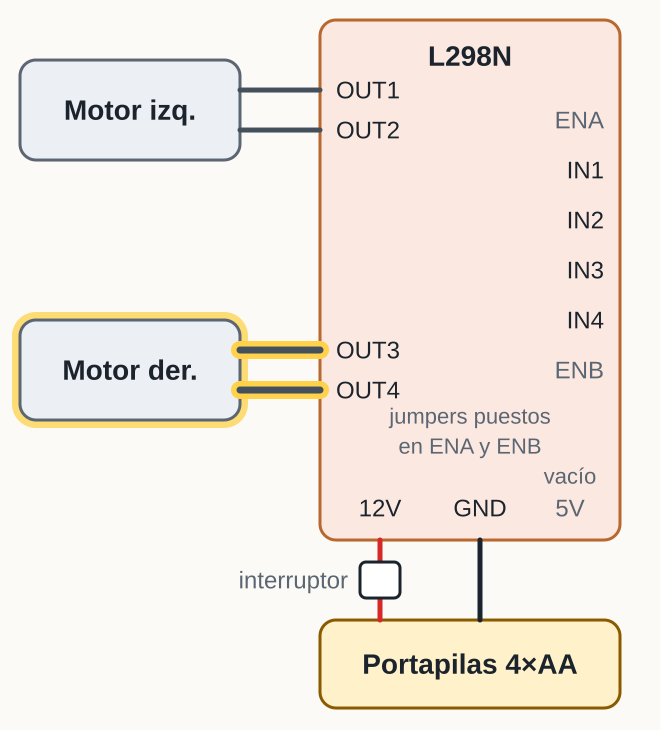
Conectar
- Un cable del motor al borne OUT3
- El otro cable al borne OUT4
Debe dar
Los dos motores firmes en sus bornes y ningún cable pelado toca a otro.
Paso 4 · El Arduino y el negativo en común
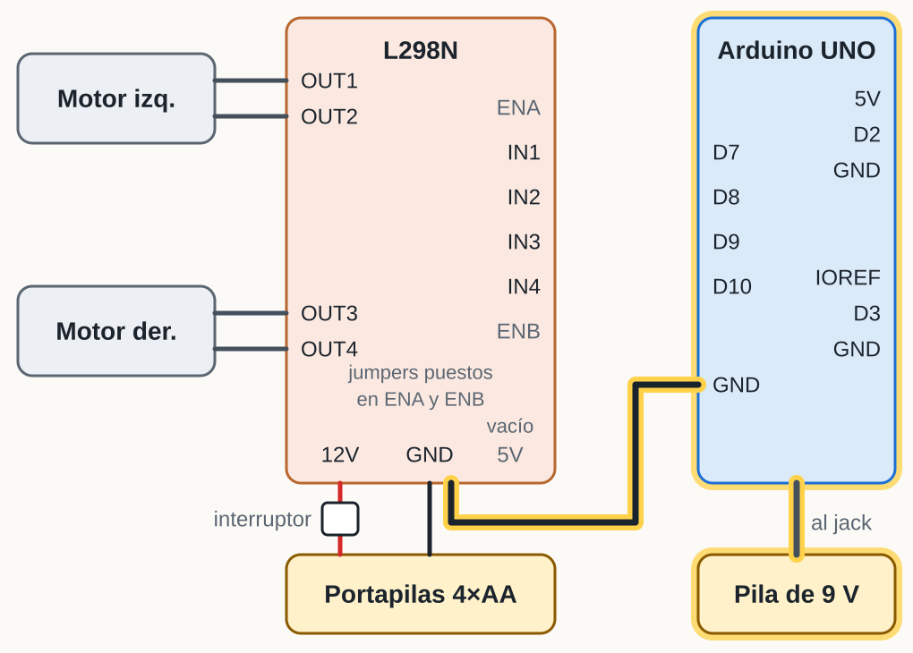
Conectar
- Pila de 9 V al jack del Arduino (solo para el Arduino)
- Cable del pin GND junto al pin 13 al borne GND del L298N
Debe dar
LED ON encendido. Pin 5V contra GND: 4,8 a 5,2 V. En continuidad, GND del Arduino con GND del L298N: pita.
Paso 5 · Probar el motor izquierdo, sin programar
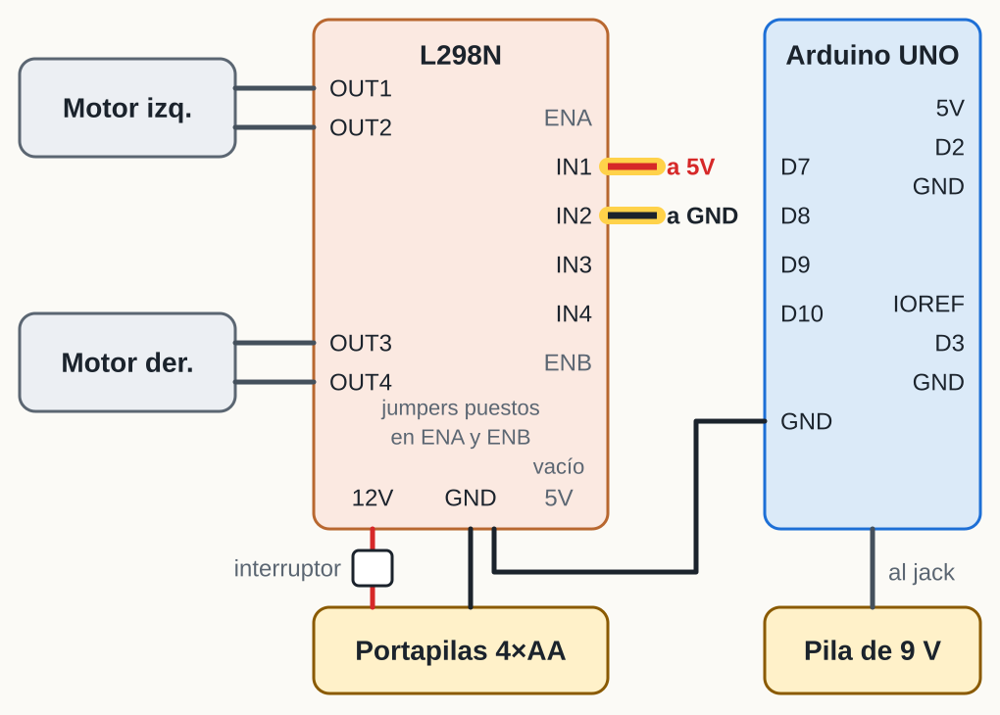
Conectar
- Con el interruptor encendido: cable del pin 5V del Arduino a IN1
- Cable de un GND del Arduino a IN2
Debe dar
El motor izquierdo gira hacia adelante. Si se cambian los dos cables de lugar, gira al revés.
Si gira hacia atrás, intercambiar sus dos cables en OUT1 y OUT2. Al terminar, quitar los dos cables.
Paso 6 · Probar el motor derecho, sin programar
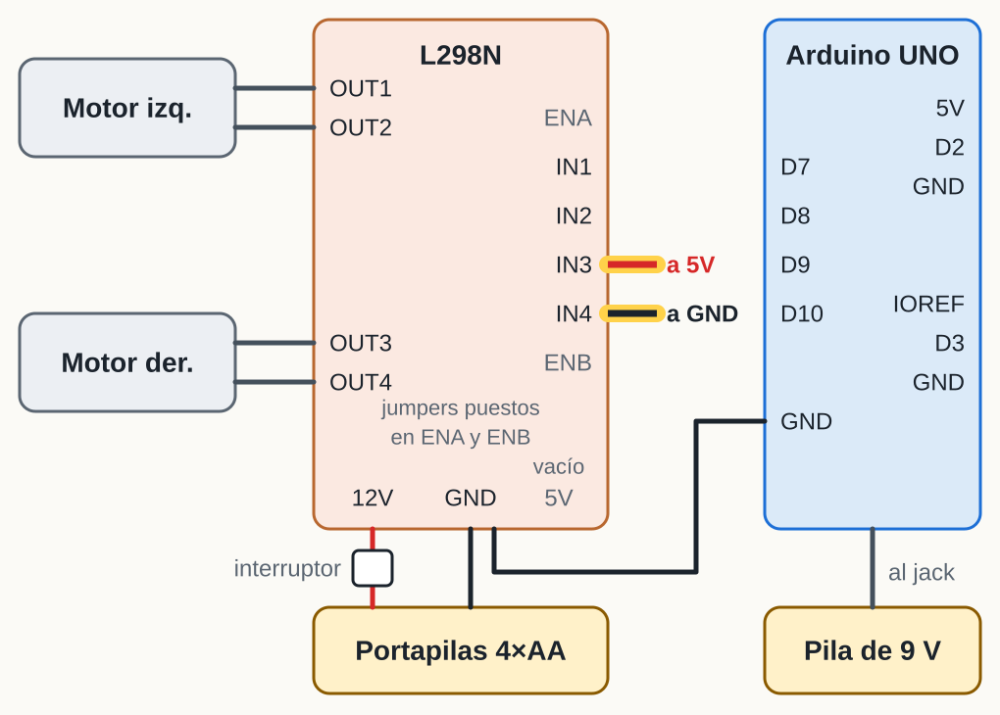
Conectar
- Cable del pin 5V a IN3
- Cable de un GND a IN4
Debe dar
El motor derecho gira hacia adelante. Cambiando los cables, al revés.
Si gira hacia atrás, intercambiar sus cables en OUT3 y OUT4. Al terminar, quitar los dos cables.
Paso 7 · Control del motor izquierdo
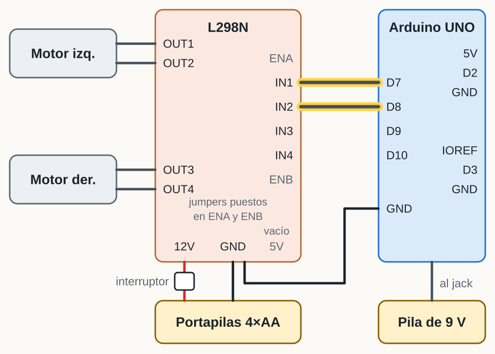
Conectar
- IN1 al pin 7 del Arduino
- IN2 al pin 8 del Arduino
Debe dar
El motor no se mueve (todavía no hay código). Cada cable en su pin, sin los provisionales.
Paso 8 · Control del motor derecho
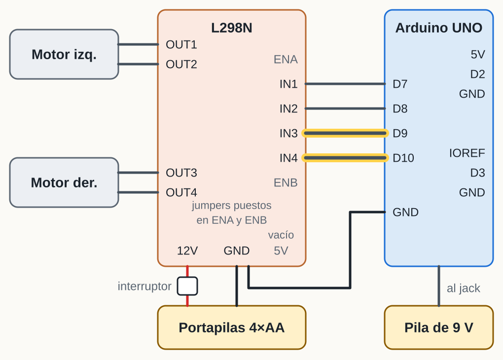
Conectar
- IN3 al pin 9 del Arduino
- IN4 al pin 10 del Arduino
Debe dar
ENA y ENB no llevan cable: sus jumpers siguen puestos.
Paso 9 · El sensor izquierdo
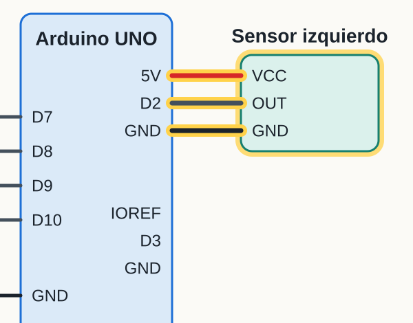
Conectar
- VCC al pin 5V
- GND al pin GND pegado al 5V
- OUT al pin 2
Debe dar
LED de energía encendido. Con la mano a 3 a 10 cm se enciende el segundo LED. En OUT: 5 V libre, 0 V con obstáculo.
Muy sensible o nada sensible: el tornillo azul del sensor.
Paso 10 · El sensor derecho
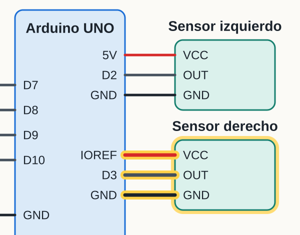
Conectar
- Antes: medir IOREF contra GND, debe dar cerca de 5 V
- VCC al pin IOREF (da los mismos 5 V del pin 5V)
- GND al otro GND de energía (junto a VIN)
- OUT al pin 3
Debe dar
Lo mismo que el izquierdo: LED de energía, segundo LED con la mano, 5 V libre y 0 V con obstáculo.
Si IOREF marca 0 V: llevar los dos VCC a una protoboard que reciba el pin 5V.
Paso 11 · Instalar el IDE de Arduino
- Entrar a arduino.cc/en/software
- Descargar el Arduino IDE 2 e instalar con todo por defecto
- Abrirlo. Si pregunta por controladores, aceptar
Debe dar: un archivo nuevo con void setup() y void loop().
Paso 12 · Conectar el Arduino al computador
- Desconectar el clip de la pila de 9 V y conectar el cable USB
- Herramientas → Placa → Arduino Uno
- Herramientas → Puerto → el que dice COM con un número
- Archivo → Ejemplos → 01.Basics → Blink y botón Subir
Debe dar: el LED L de la placa parpadea cada segundo. Si no sale ningún puerto: otro cable (muchos son solo de carga) o el controlador CH340.
Paso 13 · Código de prueba: los sensores (1 de 2)
const int SENSOR_IZQ = 2;
const int SENSOR_DER = 3;
void setup() {
pinMode(SENSOR_IZQ, INPUT);
pinMode(SENSOR_DER, INPUT);
Serial.begin(9600);
}Hacer
- Archivo → Nuevo sketch, borrar lo que trae y pegar
- Subir
- Herramientas → Monitor Serie a 9600 baudios
Debe dar
Se empiezan a escribir líneas en el Monitor Serie. Sigue en la otra diapositiva.
Paso 13 · Código de prueba: los sensores (2 de 2)
void loop() {
int izquierdo = digitalRead(SENSOR_IZQ);
int derecho = digitalRead(SENSOR_DER);
Serial.print("Izquierdo: ");
if (izquierdo == LOW) {
Serial.print("OBSTACULO");
} else {
Serial.print("libre");
}
Serial.print(" Derecho: ");
if (derecho == LOW) {
Serial.println("OBSTACULO");
} else {
Serial.println("libre");
}
delay(200);
}Hacer
- Cartón blanco frente al sensor izquierdo, y luego frente al derecho
Debe dar
Izquierdo: OBSTACULO o Derecho: OBSTACULO, según el sensor.
Si salen al revés, intercambiar 2 y 3 en el código.
Paso 14 · Código de prueba: los motores (1 de 3)
const int IN1 = 7;
const int IN2 = 8;
const int IN3 = 9;
const int IN4 = 10;
void setup() {
pinMode(IN1, OUTPUT);
pinMode(IN2, OUTPUT);
pinMode(IN3, OUTPUT);
pinMode(IN4, OUTPUT);
}
void detener() {
digitalWrite(IN1, LOW);
digitalWrite(IN2, LOW);
digitalWrite(IN3, LOW);
digitalWrite(IN4, LOW);
}Hacer
- Levantar el carro: ruedas en el aire
- Interruptor de los motores encendido
- Pegar y Subir. Sigue en las otras diapositivas
Debe dar
Todavía no se mueve nada: falta el loop.
Paso 14 · Código de prueba: los motores (2 de 3)
void loop() {
// izquierdo adelante
digitalWrite(IN1, HIGH);
digitalWrite(IN2, LOW);
delay(2000);
detener();
delay(1000);
// izquierdo atras
digitalWrite(IN1, LOW);
digitalWrite(IN2, HIGH);
delay(2000);
detener();
delay(1000);
// sigue en la otra diapositivaMirar
- Esta parte manda al motor izquierdo
Debe dar
Izquierda adelante (2 s), pausa, izquierda atrás (2 s), pausa.
Paso 14 · Código de prueba: los motores (3 de 3)
// viene de la otra diapositiva
// derecho adelante
digitalWrite(IN3, HIGH);
digitalWrite(IN4, LOW);
delay(2000);
detener();
delay(1000);
// derecho atras
digitalWrite(IN3, LOW);
digitalWrite(IN4, HIGH);
delay(2000);
detener();
delay(3000);
}Mirar
- Esta parte manda al motor derecho
Debe dar
Derecha adelante, pausa, derecha atrás, y se repite. En "adelante" la rueda gira hacia donde apuntan los sensores.
Una rueda al revés: intercambiar sus dos cables en los bornes del L298N.
Cómo decide el carro
- Ninguno ve algo: avanza
- Solo el izquierdo ve algo: gira a la derecha
- Solo el derecho ve algo: gira a la izquierda
- Los dos ven algo: retrocede un momento y gira
Paso 15 · El código completo (1 de 4)
const int IN1 = 7;
const int IN2 = 8;
const int IN3 = 9;
const int IN4 = 10;
const int SENSOR_IZQ = 2;
const int SENSOR_DER = 3;
void setup() {
pinMode(IN1, OUTPUT);
pinMode(IN2, OUTPUT);
pinMode(IN3, OUTPUT);
pinMode(IN4, OUTPUT);
pinMode(SENSOR_IZQ, INPUT);
pinMode(SENSOR_DER, INPUT);
}Hacer
- Archivo → Nuevo sketch y pegar. Esta parte declara los pines y los pone como salida o entrada
Debe dar
Es solo la preparación. Faltan las funciones de movimiento.
Paso 15 · El código completo (2 de 4)
void adelante() {
digitalWrite(IN1, HIGH);
digitalWrite(IN2, LOW);
digitalWrite(IN3, HIGH);
digitalWrite(IN4, LOW);
}
void atras() {
digitalWrite(IN1, LOW);
digitalWrite(IN2, HIGH);
digitalWrite(IN3, LOW);
digitalWrite(IN4, HIGH);
}Mirar
- adelante() y atras(): cada una pone IN1 a IN4 en HIGH o LOW
Debe dar
Los mismos HIGH y LOW que se probaron con cables en los pasos 5 y 6.
Paso 15 · El código completo (3 de 4)
void girarDerecha() {
digitalWrite(IN1, HIGH);
digitalWrite(IN2, LOW);
digitalWrite(IN3, LOW);
digitalWrite(IN4, HIGH);
}
void girarIzquierda() {
digitalWrite(IN1, LOW);
digitalWrite(IN2, HIGH);
digitalWrite(IN3, HIGH);
digitalWrite(IN4, LOW);
}Mirar
- girarDerecha() y girarIzquierda(): un motor adelante y el otro atrás
Debe dar
Cada giro es una combinación distinta de los cuatro pines.
Paso 15 · El código completo (4 de 4)
void loop() {
int izquierdo = digitalRead(SENSOR_IZQ);
int derecho = digitalRead(SENSOR_DER);
if (izquierdo == LOW && derecho == LOW) {
atras();
delay(400);
girarDerecha();
delay(400);
} else if (izquierdo == LOW) {
girarDerecha();
} else if (derecho == LOW) {
girarIzquierda();
} else {
adelante();
}
}Hacer
- Subir. Desconectar el USB y conectar la pila de 9 V
- Carro en el piso, espacio despejado, interruptor encendido
Debe dar
El carro avanza. Con la mano o un cartón blanco al frente, gira para esquivar.
Gira hacia el obstáculo: intercambiar 2 y 3 en SENSOR_IZQ y SENSOR_DER. Gira poco: subir 400 a 700.
Paso 16 · Ajustes opcionales
- Girar más o menos: los números de los delay()
- Detectar más lejos o más cerca: el tornillo azul de cada sensor
- Velocidad: ENA al pin 5, ENB al pin 6 y analogWrite
- Un tercer sensor al centro, con OUT al pin 4
Un solo cambio por vez. Si se daña, volver al código completo.
Si me quieren agregar
Correo institucional:
jjardila@libertadores.edu.co